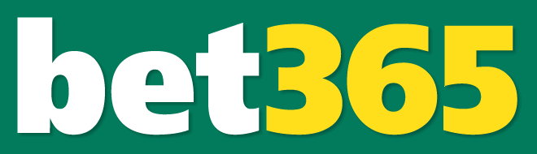
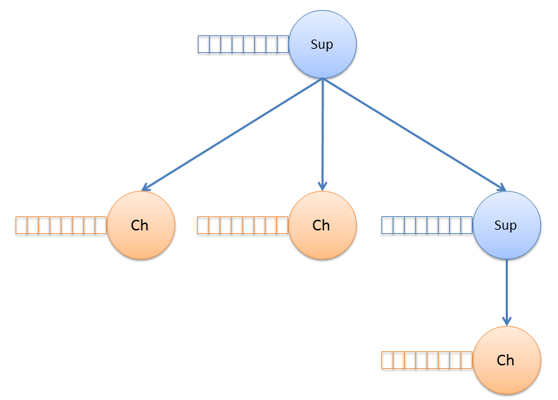

Introduction to

by Paul Vincent
What if...
...you had a wish list for modern software development?
What if...?
loosely coupled services
service registry
simple packaging model
simple scalability and native distibution
processes were cheap and isolated
What if...
concurrency
immutability
native fault tolorence
hot code reload
a schema less, distributed database
What if...
...rather than 1 web server supporting 10,000 concurrent connections...
What if...
...there were 10,000 webservers, each handling a single consumer?
Sounding like a new cool [micro|nano] services framework?
What if I told you, it was 30 years old?
And that it was developed to solve the telecomunication challenges in the 1980's?

Targetted scaling to 1 million concurrent connections per host.
2 million achieved in 2012.
Brought by Facebook for $19 billion in 2014, they had 50 employees servicing 450 million users.
10 billion messages handled every day, their messaging system is written in Erlang
Reference
A real-time bidding advertisment platform supporting 60 billion requests per day (in 2015).
Requests processed within a 100 milliseconds timeout
Fully hosted on AWS
Reference

"Our first big success with Erlang was on our system that pushes data to customers using our In-Play product.
We are making 100,000 changes to the system every second, whilst serving over 2.5 million concurrent connections."
Reference
MME
"MME is a thing in the backbone of mobile telephony network, it makes all mobile data work.
And it’s written in Erlang.
Smartphones wouldn’t be able to connect to the network at all without MME.
Now, Ericsson’s got the biggest market share in the world for mobile base stations, for we do 40% of the total world market of 3G and CDMA and 60% of the world market for LTE and 4G.
This gives us about 50% of the world market.
That means, Erlang’s controlling 50% of all smartphones world wide".
Reference
Transcript reference
What's an actor?
